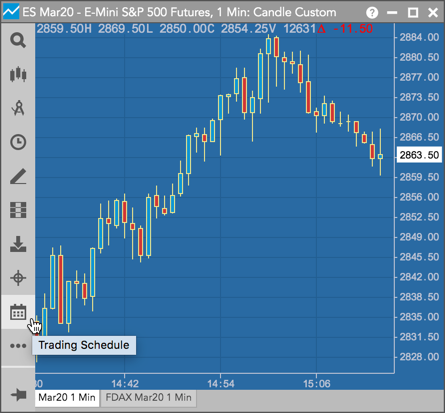
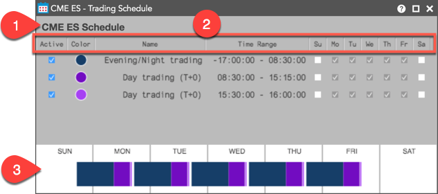
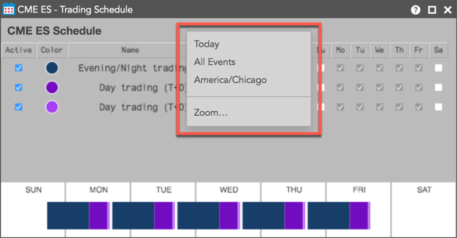
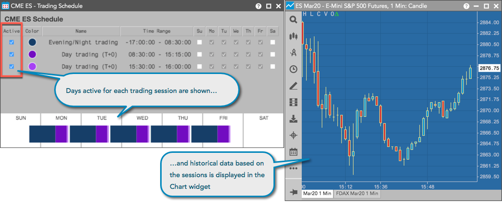
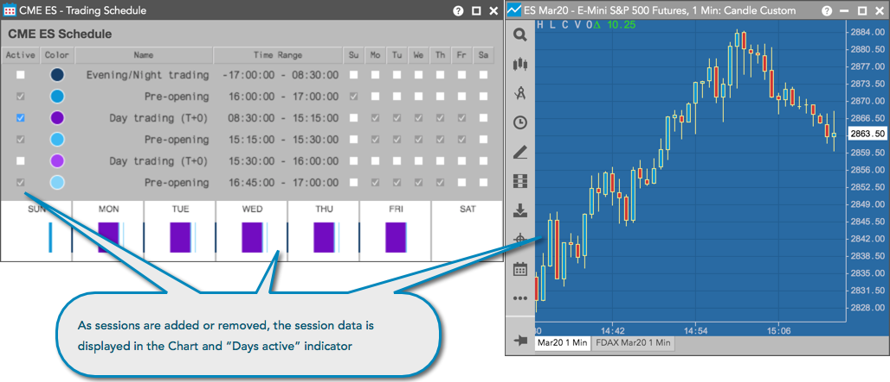

The Trading Schedule widget allows you to view the trading schedule for a product and gives you the ability to activate or deactivate individual sessions. Trading and clearing session times are set per product by the exchange, and traders can view the trading hours of each instrument in the Trading Schedule widget.

Opening the Trading Schedule widget
To open Trading Schedule for an instrument, open the menu in the Chart widget and click .

Trading Schedule Display
The following image shows the basic components of the Trading Schedule widget.

The image shows:
- Schedule Name — Shows the name of the exchange and product.
- Trading Schedule columns — The following columns are shown:
- Active: Indicates if historical data for the session is displayed in the Chart widget. When the checkbox is checked, the session is "active" and data is displayed. Click the checkbox to add/remove trading session data from the Chart widget. At least one session must be active. All trading sessions are marked active by default.
- Color: The color shown for the session in the "Days active indicator" at the bottom of the widget.
- Name: The name of the exchange session or event.
- Time Range: The trading hours for the session. The minus sign "-" next to the time (e.g., -15:00:00) indicates that the trading session began the previous day.
- Days of the Week: Indicates which days are reflected in the Chart widget and the "Days active indicator" for each trading session.
- Days active indicator — Shows a visual display of the days and times a session was active. Each time range for the session is color-coded as indicated by the "Color" column. The "Days active indicator" changes based on which exchange sessions are marked "active" and which timezone is selected.
Trading Schedule Settings
The right-click menu provides optional settings for viewing a product's schedule, events, and time zone in the Chart widget.

In addition to the standard context menu options (e.g., Zoom), the following settings are available:
- Today/This Week — Toggles between displaying data for the current trading day or the entire week. Click the option to toggle between the two settings.
- Trading Events/All Events — Shows data for trading sessions only or all exchange sessions, market states, and events (e.g., Pre-Open, Auction, etc.). Click the option to toggle between the two settings. Note: When "All Events" is selected, non-trading sessions are grayed out but their time range is shown in the "Days active indicator".
- Timezone — Sets the timezone for the exchange sessions. The "Days active indicators" and "Time Range" columns in the widget reflect the selected timezone. Click this option to toggle between the actual exchange timezone for the sessions and the timezone on your trading device (e.g., workstation, mobile, laptop).
Using the Trading Schedule
When you open a Trading Schedule widget for an instrument, the Chart widget shows the historical trading data for that instrument based on the sessions active in Trading Schedule, and the "Days active indicator" in the widget shows the length of each trading session.
The following example shows historical data displayed in the Chart for all trading sessions of the ES Mar20 contract on CME.

As you add or remove sessions in Trading Schedule, the historical data changes in the Chart. The "Days active indicator" also changes based on the timezone and exchange sessions selected. Sessions can be added or removed by using the Trading Sessions/All Events right-click menu option, or by checking/unchecking the Active column for a specific trading session.
For example, if you check the Active column for the Day Trading session (8:30 - 15:15) for the ES Mar20 contract on CME and uncheck the other trading sessions, then only data for this "active" trading session is shown
in the Chart widget. If you also click All Events in the right-click menu, the "Days active indicator" shows the time range of the active session in addition to all other exchange sessions for this instrument.
